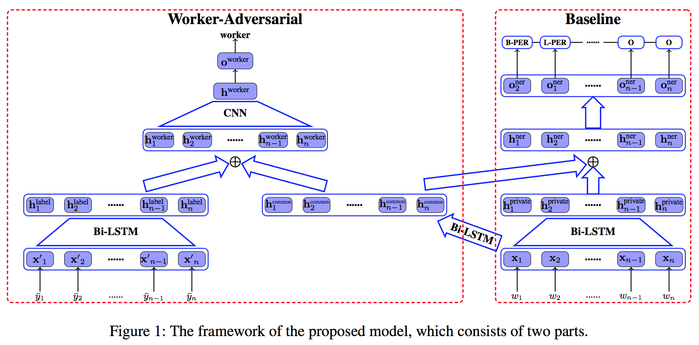
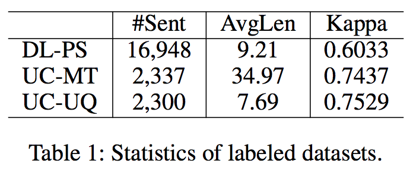
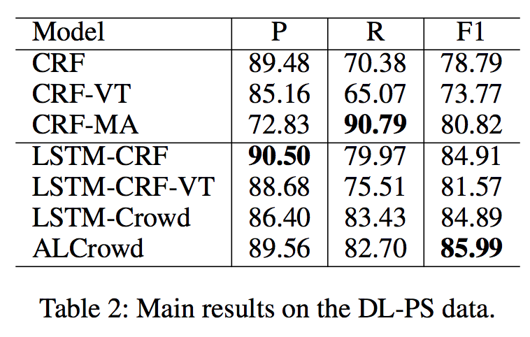
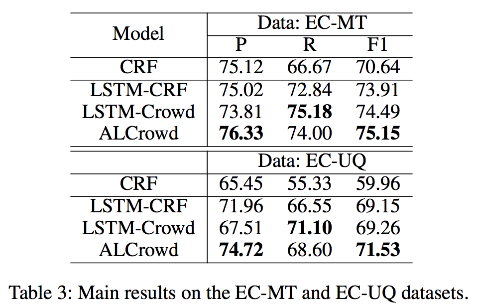
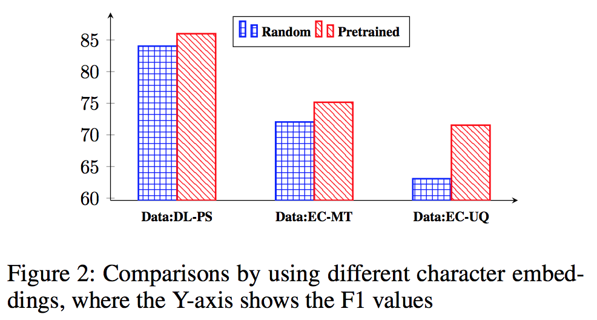
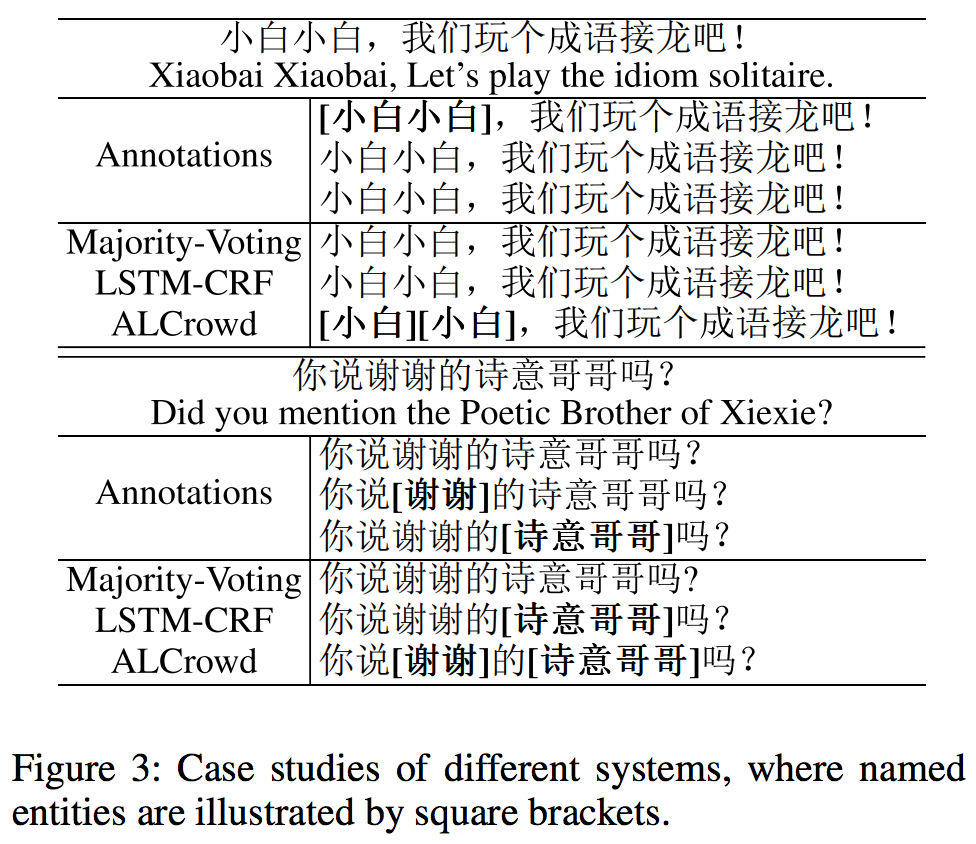

| title | Adversarial Learning for Chinese NER from Crowd Annotations |
|---|---|
| author | YaoSheng Yang(1), Meishan Zhang(4), Wenliang Chen(1), Wei Zhang(2), Haofen Wang(3), Min Zhang(1) |
| organization | (1)Soochow University (2) Alibaba Group (3) Shenzhen Gowild Robotics Co. Ltd (4) Heilongjiang University |
| year | 2018 |
| publish | AAAI-2018 |
新規性を主張しているポイント
提案手法
手法の評価
所感
貢献

例がいっぱい書いてあるがイマイチわからん。ラベリングしているworkerを判別するdiscriminatorを作るっぽい
次の節でソフトマックスで確率に直す話が出てくる





| term | discription |
|---|---|
| DL | Dialog domain |
| DL-PS | Dialog domain Person-name Song-name |
| EC | E-commerce domain |
| EC-MT | E-Commerce domain Title of Merchandise entity |
| EC-UQ | E-Commerce domain User Queries |
| F1 | F1 value |
| P | Precision |
| R | Recall |